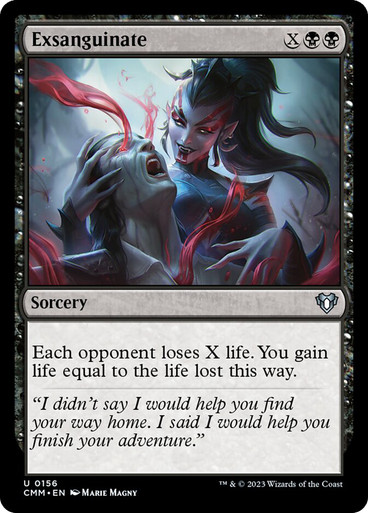
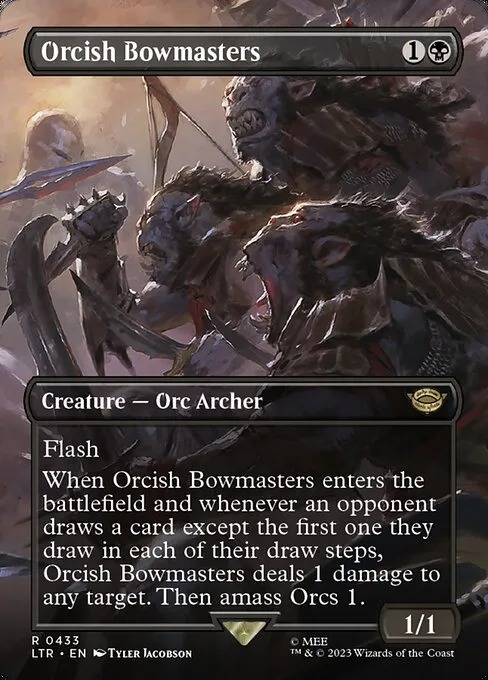

Combos The Gitrog monster
by maruchan
Drawing the library
Requirements
- Dakmore salvage in hand
- A discard outlet on the battlefield
- The Gitrog Monster on the battlefield
Procedure
- Discard dakmore, Gitrog tiggers
- Resolve the draw trigger choosing to replace it with the dakmore dredge
- You mill a shuffeler
- You mill no land cards
- You mill at least one land
Infinite mana
- No cards in your library or your graveyard
- Gitrog on the battlefield
- Discard outlet on the battlefield
- Cast lotus petal (In case you didn't have it already on the battlefield).
- Discard a land, in response to the Gitrogs trigger discard Ulamog (Or a shuffeler) and shuffle.
- Holding the draw trigger, discard dakmore and mill, resolve ONLY the shuffle (Now you'll have 2 draw triggers on the stack).
- Discard dakmore, in response to the Gitrog trigger crack lotus petal and choose to dredge.
- Resolve the shuffle and then draw 3 cards.
- No cards in your library or your graveyard
- Gitrog on the battlefield
- Discard outlet on the battlefield
- at least 1 black mana aveliable
- Discard a land, in response to the Gitrogs trigger discard Ulamog (Or a shuffeler) and shuffle.
- Holding the draw trigger, discard dakmore and mill, resolve ONLY the shuffle (Now you'll have 2 draw triggers on the stack).
- Discard dakmore, in response to the Gitrog trigger cast dark ritual and choose to dredge.
- Resolve the shuffle and then draw 3 cards.
Sorcery speed
Requirements
Procedure
NOW YOU WILL GENERATE INFINITE MANA!! (reapeating those steps as many times as you want)
Instant speed
Requirements
Procedure
Now you need something to spent that mana
Wincons
Like in the Infinite mana combo you can also choose between sorcery speed and instant speed
Sorcery speed
Requirements
- Infinite black mana
Procedure
- Cast Exsanguinate  , being x=10000.
Instant speed
Requirements
- No cards in your library or your graveyard
- Gitrog on the battlefield
- Discard outlet on the battlefield
- Infinite black mana
Procedure
- Discard a land, in response to the Gitrogs trigger discard Ulamog (Or a shuffeler) and shuffle.
- Holding the draw trigger, discard dakmore and mill, resolve ONLY the shuffle (Now you'll have 2 draw triggers on the stack).
- Repeat step 2 (Now you have 3 draw triggers on the stack)
- Discard dakmore, in response to the Gitrog trigger cast Orcish Bow Masters (OBM)  , pin an oponent and choose to dredge.
- Cast dismember targeting OBM
- Resolve the shuffle and then draw 4 cards.